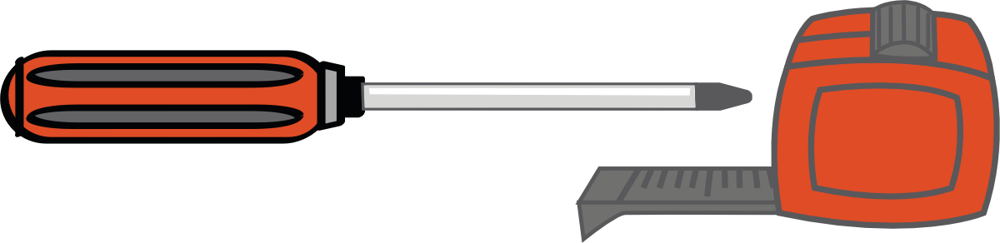

Install Guide
How to setup your Union Bindings
For binding installation instructions, watch the video above or download the 2017 Installation Manual (PDF) below.
Intallation Guide PDFRIDER SERVICE / GENERAL INFO:
Telephone: 206-632-1601
E-mail: info@unionbindingcompany.com
Hours: Monday - Friday (9am-5pm PST)
KEEP SCROLLING FOR FURTHER INFO
Congratulations on your new set of Union Bindings. Union Bindings are the higest-performing, best-fitting bindings money can buy.
Bindings are the most important piece of snowboarding equipment you own. That being said, it’s crucial that they are set up properly to ensure optimal fit and performance. This guide will give you all the info you need to dial in the proper boot-in-binding fit.
If this is your first time setting up a snowboard, we highly suggest going into an Authorized Union Dealer for assistance. Your stance is something that you can set up in 5 minutes but it may take you 5 years to perfect.
Remember, there is no right or wrong, so experiment with it and find what works for you.
Warning: Snowboarding is a hazardous sport which can result in serious injury or, in certain circumstances, death. Snowboard bindings by design do not release upon impact. Make sure all of your hardware is tight before each use, you ride within your ability level, and you abide by the mountain responsibility code. By using this equipment, all risk is assumed by you.
Tools Needed:
1 - #3 Phillips Screwdriver Screwdriver
1 - Tape Measure
Warning!

Application of Loc-Tite is not recommended by Union Binding Company. The use of Loc-Tite or similar products could result in stress cracks and fractures on all thermo plastics. If you are having issues with loose mounting hardware please contact your local authorized Union dealer.
STEP 1 - STANCE WIDTH

Stance Width: Either get tech with a tape measure, or just eyeball it to find out what looks and feels best. You may need to experiment to find the stance that works best for your style of riding. If you have no idea how wide/narrow of a stance to ride, try going slightly wider than shoulder width and modify from there.
STEP 2 - STANCE ANGLES

Just like your stance width, the angles of your bindings are all about personal preference and comfort. If you aren’t sure, try the angles below and modify from there.
Tip: When setting up your board make sure the ratchets are facing the tip and tail. Don’t put your bindings on backwards!
STEP 3 (4x4) - MOUNTING YOUR BINDINGS

Universal Disk (4X4 + Channel Compatibility): Align your disk with the boards inserts that you plan on using. If you’re using the Channel you will only need to use two washers and two screws to mount each binding. If you are using a traditional 4X4 mounting system be sure to use all four washers and screws. Begin by threading one screw with a washer. Make sure that the disk doesn’t move or you will have a hard time threading the remaining inserts. Next, thread the remaining screws and washers into place. Hardware should be hand tightened using a #3 Phillips Screwdriver.
STEP 3 (4x2 / CHANNEL) - MOUNTING YOUR BINDINGS

Universal Disk (4X4 + Channel Compatibility): Align your disk with the boards inserts that you plan on using. If you’re using the Channel you will only need to use two washers and two screws to mount each binding. If you are using a traditional 4X4 mounting system be sure to use all four washers and screws. Begin by threading one screw with a washer. Make sure that the disk doesn’t move or you will have a hard time threading the remaining inserts. Next, thread the remaining screws and washers into place. Hardware should be hand tightened using a #3 Phillips Screwdriver.
STEP 4 - BOOT TO BINDING FIT

Centering your boots: Avoid any toe or heel drag by making sure your boots are centered on your board, by adjusting the heelcup. Both the toe and heel of the boot should be an equal distance from both edges of the board.
STEP 5 - HEELCUP ADJUSTMENT

Heel Cup Adjustment: Simply loosen the main heelcup and ankle strap screws on the base (one on each side). Slide the heelcup either forward or back for desired fit. Be sure to retighten your hardware!
Tip – You don’t need to take the screws all the way out. Just loosen enough to move.
STEP 6 - DISK COVER ADJUSTMENT

For seamless connection between your boot and binding, remove the disk cover/gas pedal screw and adjust to your liking.
STEP 7 - ALTERNATIVE DISK COVER ADJUSTMENT

The Contact / ST / Milan / Juliet have our all-new Stage V disc cover. To release the disc cover take a screwdriver and slide it into the provided slots at the rear of the disc cover. Lightly lift up on the screwdriver to release the cover.
STEP 8 - FINISH DISK COVER ADJUSTMENT

Once you’ve finished adjusting your discs simply snap the cover back into place. Be sure that the tabs lock into the baseplate, you should hear a “click”
STEP 9 - TOE STRAP ADJUSTMENTS

Toe Strap Centering: For optimal toe strap fit, the strap should be centered with the middle of your boot and showing about 3 – 5 teeth on the ladder. To do so, remove the tool - free adjustable screw. Slide the strap to the proper length, make sure the holes are lined up. Rethread the tool-free adjuster. Be sure to check that the screw has been fully rethreaded.
STEP 10 - TOE STRAP ADJUSTMENTS

Multi-Position Toe Strap: High-Performance, highly comfortable toe straps keep your feet locked in and on point. It’s called True Fit, and they allow for either traditional “over the top” or “over the toes” settings for your personal preference.
STEP 11 - TOE STRAP LENGTH
Multi-Position Toe Strap: High-Performance, highly comfortable toe straps keep your feet locked in and on point. It’s called True Fit, and they allow for either traditional “over the top” or “over the toes” settings for your personal preference.
STEP 12 - ANKLE STRAP ADJUSTMENTS

Ankle Strap Centering: For optimal ankle strap fit, the strap should be centered with the middle of your boot and showing about 3–5 teeth on the ladder. To do so, remove the tool-free adjustable screw. Slide the strap to the proper length, make sure the holes are lined up. Rethread the tool-free adjuster. Be sure to check that the screw has been fully rethreaded.
STEP 13 - HIGHBACK ADJUSTMENTS

To adjust the highback, simply remove the screw on each side (two total) where the highback meets the ankle straps. If so desired, this allows the highback to rotate within the heelcup becoming parallel to the edge of the board.
STEP 14 - FORWARD LEAN

Pull the lever away from the highback to release tension on the forward lean block. Now you can slide the forward lean block up or down to your preferred setting. Snap back, and you’re ready to ride.
Tip: Don’t tighten or loosen the highback lever. Simply pull away and snap back into place.